A Bay Area FIRST Tech Challenge team engineering competition robots and building STEM opportunity for thousands of students, from our own build room to classrooms across Ethiopia.
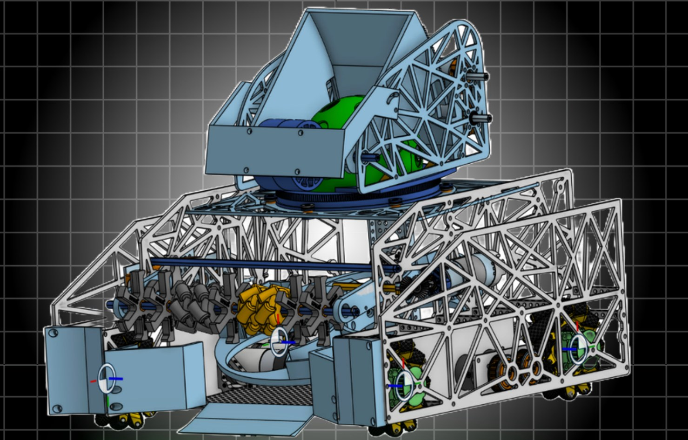
Our mission is to ignite a passion for STEM within our team and our community — to inspire the next generation of STEM leaders. We measure success by the passion we pass on. We promise to be the spark.
Every build decision and every outreach event is judged against the same question: does this move someone forward, on the field or off it.
From a Boy Scouts merit badge to fifteen brand-new teams in Ethiopia, we build doors, not walls, into robotics.
Persistence and teamwork in service of the spirit of FIRST — competing hard while lifting the community around us.
Four systems work in sequence every cycle: intake, index, flick, and launch. Here's how the DECODE-season robot is built.
Dual rubber flywheels launch artifacts, calibrated to ~10k experimental rpm off an 18k theoretical ceiling.
6 boot wheels + 4 vector wheels for rapid, consistent artifact pickup from any angle.
A high-torque servo drives a sliding linkage that flicks one artifact into the outtake per cycle.
An angled spindexer holds 3 artifacts and rotates 120° per selection to the scoring position.
Dual rubber flywheels launch artifacts at ~10k experimental rpm.
6 boot wheels + 4 vector wheels for consistent pickup.
High-torque servo + sliding linkage feeds one artifact per cycle.
Angled spindexer holds 3 artifacts, rotating 120° per pick.
Autonomous banks points close and far, teleop cycles fast, and endgame closes on the motif.
Nothing on the current robot survived its first design. Every mechanism failed forward through at least two prototypes.
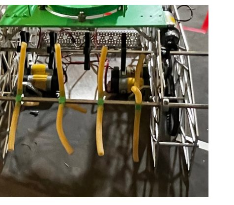
Grip was inconsistent — scrapped.
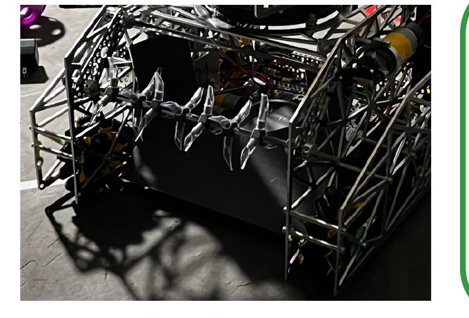
Still inconsistent — scrapped again.
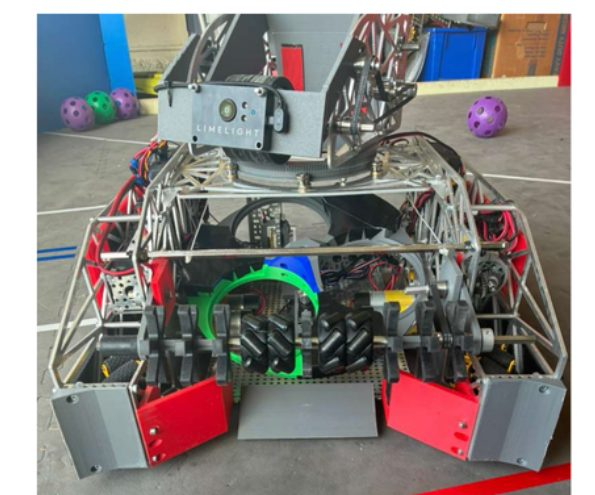
Reliable from any approach angle.
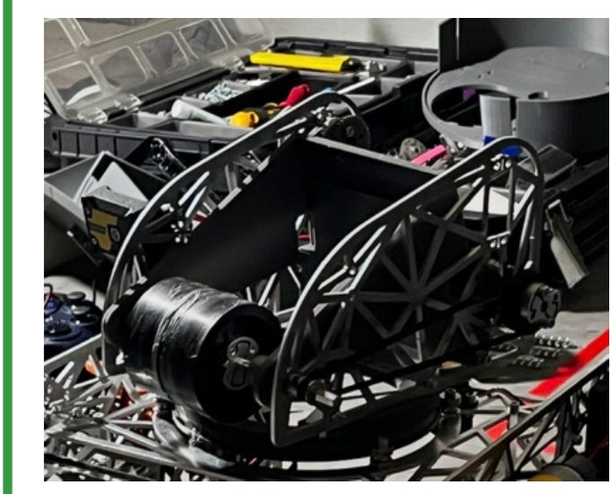
Flywheels lost speed every shot from ball compression.
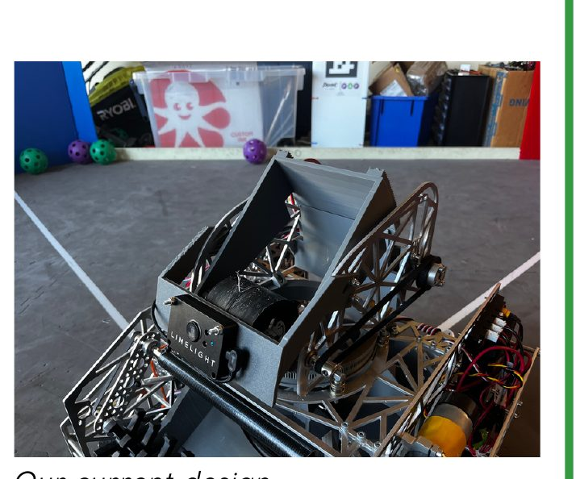
Consistent speed shot after shot.
The mechanisms and software that turn a chassis into a scoring machine.
An angled rotary spindexer stores, indexes, and delivers artifacts to the outtake. Tilting it upward lets gravity assist alignment, and a simplified architecture removes unnecessary internal barriers for reliability.
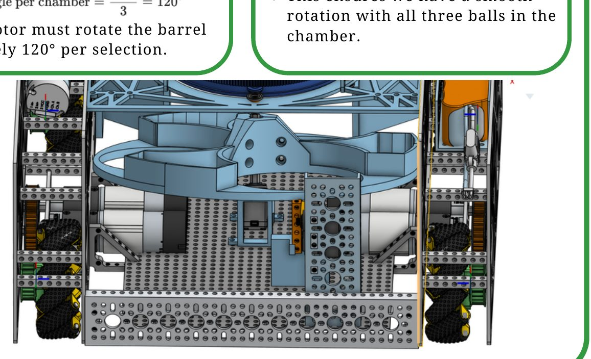
CAD'd in Onshape for tight integration with the spindexer. A circular bowl aligns the artifact; a scissor-style linear rail, driven by a high-torque servo, delivers a controlled, repeatable flick — one artifact per cycle.
One pod mounted perpendicular on the right side, one parallel on the back — both spring-loaded to stay in constant contact with the field tile. Streaming distance telemetry replaces the wheel-slip errors of raw motor-encoder tracking.
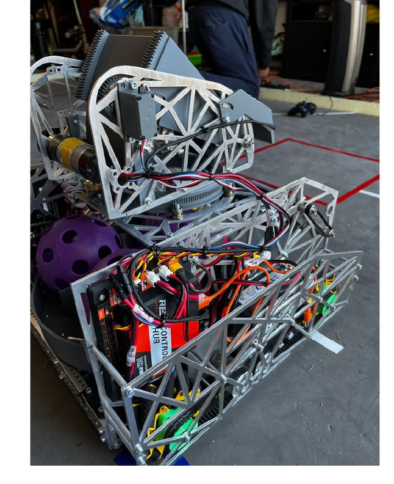
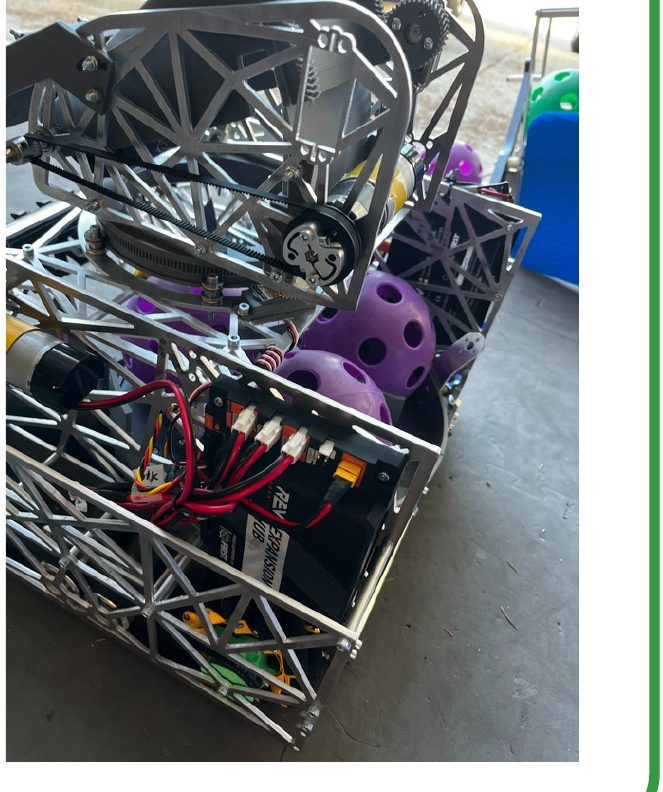
A custom aluminum chassis (with 3D-printed components) built for a low center of gravity, high hit-tolerance, and maximum interior volume for every mechanism above it.
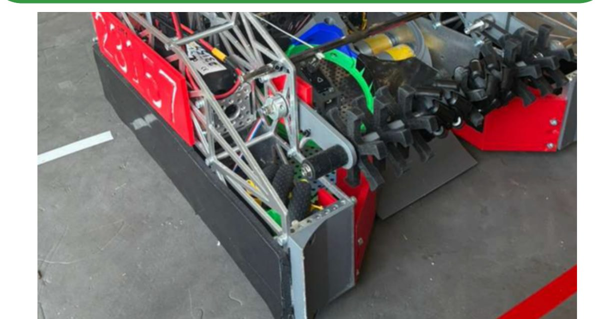
We started with a goBILDA USB camera for target-locking, but its 30 FPS cap and narrow field of view lost lock during fast turret motion — we switched to Limelight for vision, driving turret speed off a responsive feedback loop on angular error. Flywheel speed is held with a proportional control loop: calibrated at 75% power to an ideal 928.8 ticks/sec, corrected against a tick-error term with a 1/100 gain and a ±100-tick tolerance band. On the driver side, an automated cycle sequences lift, index, and shoot with zero lost time, and hood angle auto-adjusts from AprilTag distance data. For navigation we deliberately skipped complex sensor fusion in favor of pure odometry-pod distance tracking — simpler, and it removed the slippage error that haunted our earlier encoder-only approach.
We measure the season by how many people it reaches — in our own gym and on the other side of the planet.
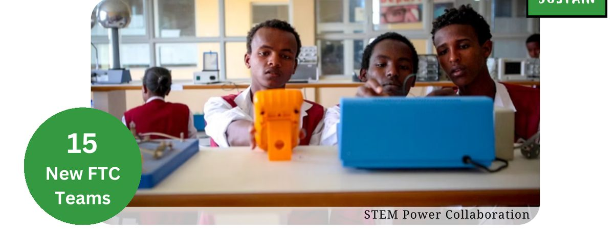
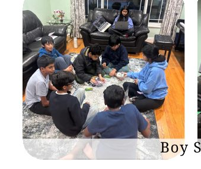
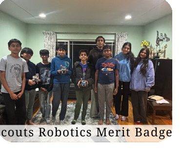
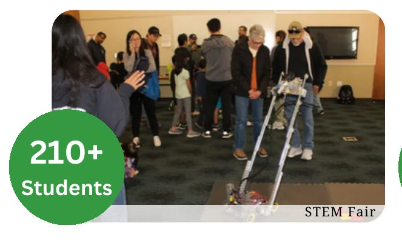
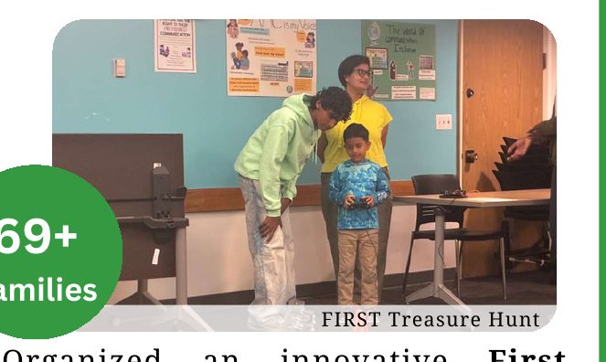
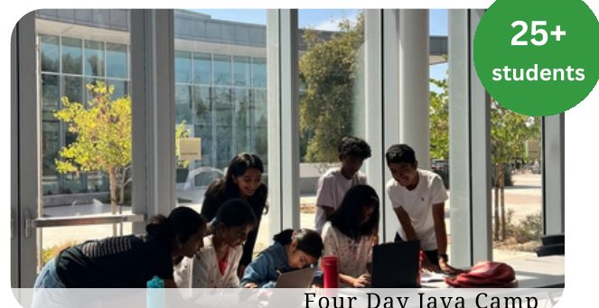
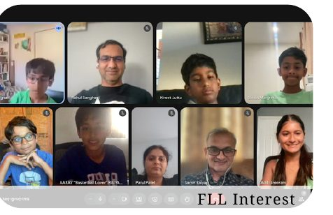
Working with STEM Power, we sent hundreds of emails and faced plenty of rejection before securing a partnership that brought robotics to hundreds of new students.
Girl Scouts & Boy Scouts robotics badges, a multi-week Advanced Java Workshop, elementary school visits, and family-friendly community tech fairs.
Robawks went on to place 4th overall at a local qualifier. Yetibots learned mecanum drive and 3D printing on their path from FLL into FTC.
Management runs on three living documents — Roles & Responsibilities, an Executive doc, and a Vision doc — under our 501(c)3, so momentum survives every graduating class.
An SMT-hosted robot review turned into a running relationship with working engineers who shaped real design decisions.
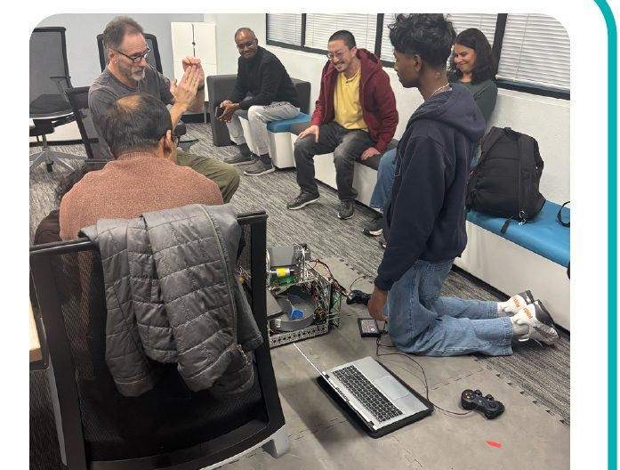
Suggested mounting the turret on sliding rails for fine positioning — improving aim and shooting reliability.
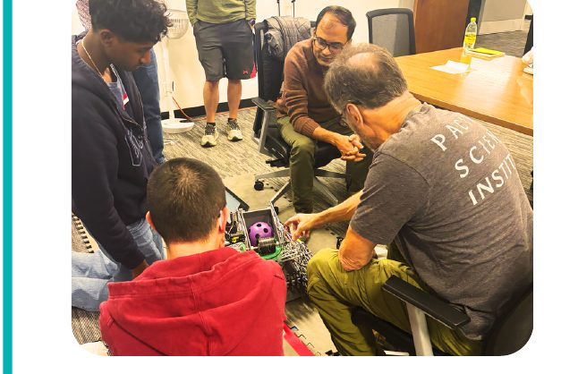
Proposed a secondary rotating axis on the intake so it could align to incoming artifacts at any angle.
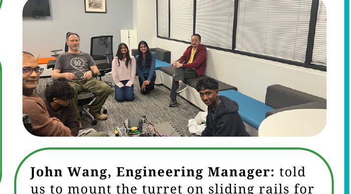
Pushed us to automate control inputs, cutting human timing error out of the driving loop.
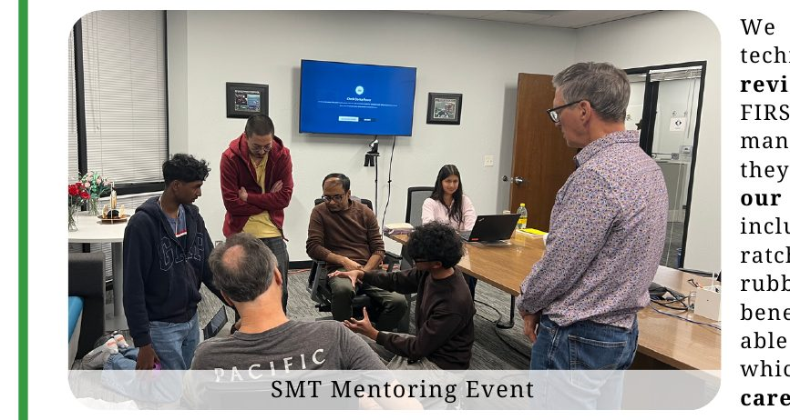
Recommended responsive flywheel speed adjustments so shots stay consistent as conditions change.
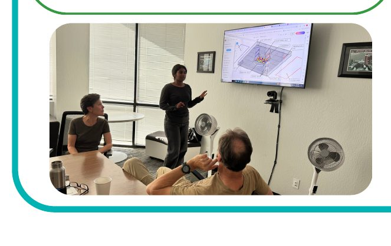
Reviewed in-action gameplay with us to sharpen driving strategy under time pressure.
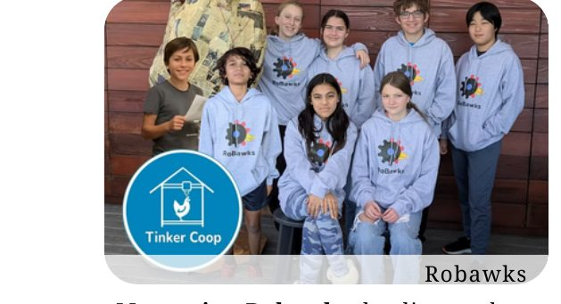
Tied it together: sliding-rail turret, secondary intake axis, responsive flywheel control, and gameplay-driven driving strategy.
We fund the season door-to-door and online — pitching businesses directly and applying to grants through CRM-tracked outreach.
We go door to door, speaking directly with businesses in high-traffic areas to build local sponsorships.
We use CRM tools to connect with business professionals remotely and apply for grants at scale.
A student-run team backed by mentors, sponsors, and a season-two roster still growing.
Leads Wolverine's build, strategy, and outreach direction for the 2025–2026 DECODE season.
Add teammate
Add teammate
Add teammate